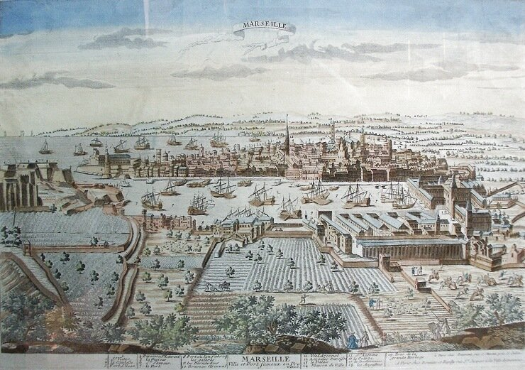

Среди вопросов, поставленных коллегой limazulu (см. здесь), был и такой:
«Также я могу предположить, что в случае использования галер для перевозки большого количества войск проблема автономности обостряется максимально - я читал, что экипаж галер мог доходить до 250 человек, а максимальное количество людей на борту достигало 450. Честно говоря, мне сложно представить, как разместить на 60-метровой галере 450 человек, не говоря уже о провианте для них на 4 недели плавания.»
Относительно максимального количества людей на борту, я думаю, мы уточнили цифры в предыдущих постах, о размещении людей на галере поговорим позже, что же касается вопросов продовольственного снабжения галер, то рассмотрим этот вопрос сейчас. Источники, как обычно, будем указывать по ходу рассказа, там, где источник не указан, особенно если это касается эпохи Людовика XIV, подразумевается, что информация взята из упоминавшейся выше неоднократно книги Поля У. Бэмфорда «И боевые корабли, и тюрьмы».
Прежде чем рассказать о питании экипажей на борту галер, рассмотрим общую организацию снабжения галерного флота провиантом на примере Галерного корпуса Франции при Людовике XIV.

Основную часть ответственности за обеспечение снабжения Галерного Корпуса всеми видами довольствия, в том числе, конечно, и продовольствием, нес Интендант галер как главный представитель командования флота в месте его дислокации. Морской министр, естественно, делил с ним ответственность, но он был далеко от места базирования и зависел от советов интенданта относительно качества и цены товаров, оценки будущих потребностей и наблюдения за исполнением существующих контрактов на продовольствие и материальное снабжение.
Отношения между центральной администрацией и администрацией в Марселе всегда отражали личные качества и характер конкретных лиц. Но общеизвестная склонность Кольбера к единоличному командованию не была очевидной или действенной в случае его отношений с интендантами галер Арнулем и Бродаром. Например, старший Кольбер в вопросе снабжения продовольствием предпочитал ответственность за поставки снабжения в военный порт возложить на купцов, обращаясь к ним лишь тогда, когда обнаружится потребность в продовольствии. Арнуль, вероятно, в расчете на использование принадлежащего ему складского комплекса (того самого, который долгое время препятствовал расширению галерной базы; он изображен справа на приведенной иллюстрации и был построен на конфискованных у марсельцев землях) предпочитал складирование на базе продовольствия и некоторых других видов снабжения, предварительно закупленных в сезон низких цен. Он умалчивал о том, что само складирование обходится в копеечку. Знаменательно, что способ Арнуля возобладал над предложением Кольбера, хотя последний остро критиковал администрацию Арнуля за ее деятельность в этом направлении:
«…огромное число строений, которое я видел в вашем порту, не устраивает меня. Все эти склады, построенные вами для масла, овощей и других товаров, которые вы хотите покупать для галер в период, когда они продаются по разумным ценам, чтобы немного сэкономить, не в моем вкусе… Верьте мне, интересы его величества могут быть соблюдены лучше, [если будем иметь дело] с купцами. Купцы заботятся о своих товарах, что нельзя сказать о вас [как администраторе]: вы не можете состязаться с ними в этом просто из-за многообразия обязанностей, которые на вас лежат. Охрана, которую вы установите [на складах] будет обманывать вас, не осуществляя точного учета товаров и тщательного наблюдения за складами. Отклонения от нормы и случайности, которые могут произойти с вашими запасами, докажут, что хорошее управление не может быть ничем кроме [плода] воображения.»
Кольбер и Арнуль оба очень хорошо разбирались в корыстных мотивах людей. Оба были опытными администраторами. Оба признавали трудность приобретения и сохранения верности подчиненных в ту эпоху, особенно на службе короне. Личный экономический интерес являлся рычагом, которым было легче овладеть, и тем самым пользоваться им, чем игнорировать его. Но эти двое работали на разных хозяев. «Королевская служба выигрывает от того,- говорил Кольбер, - что купцы получают прибыль», так как маленькая прибыль делает большие предприятия. Хотя Кольбер работал на короля, он не видел «никакой необходимости в том, чтобы быть всегда строгим и суровым с купцами, жестоким в оценке [их] действий. Необходимо только поправлять их, не обвинять их, когда дела в какой-то мере не ладятся. Ваши торговые поставщики нуждаются в похвале и одобрении.» Арнуль, как сознавал Кольбер, сердил купцов Марселя, когда его программа строительства складов лишала их прибыли. Министр высказал уверенность в том, что Арнуль скоро осознает, насколько бесполезны были эти склады. Но склады принесли-таки свою пользу: на долгом пути своего существования они внесли вклад главным образом в состояние Арнуля.
[Как не вспомнить здесь о громаднейших складах на главных наших военно-морских базах, обогативших не одно поколение интендантов всех степеней!]
Размеры поставок продовольствия для Галерного корпуса требовали долгосрочного планирования. Например, среди запасов, запланированных для поставки в Марсель весной и летом 1688 года, имелось:
500 голов крупного рогатого скота (живых или солонины)
1 500 свиней (живых или солонины)
1 500 септьер (septiers (d’Arles?)) зерна или сухарей (1 septier = 44 кг)
1 500 мильролей (milleroles) вина (64.3 л каждый)
50 000 фунтов трески
30 000 фунтов сыра (Грюйера или Голландского)
30 000 фунтов риса
1 600 септьер овощей
1 800 бочек сардин
200 мильролей растительного масла (приблизительно 60 кг каждый)
200 мильролей уксуса (64.3 л каждый)
300 тонн древесного угля.
Продолжим обсуждение темы в следующий раз.